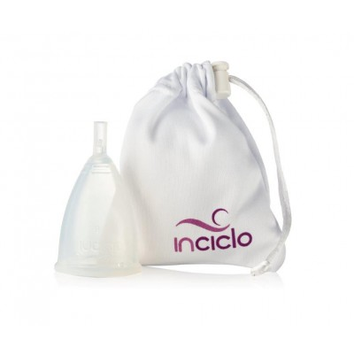
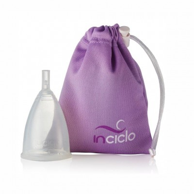
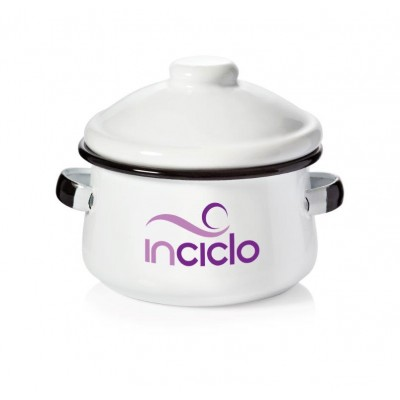

O Inciclo é a solução que oferece liberdade para todas as mulheres durante o período menstrual. Funciona como um coletor reutilizável que substitui o uso de absorventes. Oferece praticidade, conforto, economia, além de ser uma escolha sustentável. O Inciclo é flexível e se adapta perfeitamente ao corpo, o que faz com que você esqueça que está usando! É perfeito para todas as atividades (inclusive yoga, ciclismo, acrobacia, natação, ginástica, corrida e mergulho). Você também poderá dormir com o Inciclo. O Inciclo é simples de usar, ele é inserido na vagina e simplesmente coleta o fluxo. Pode ser usado por até 12 horas! Depois é só retirar, lavar e usar novamente. Como o Inciclo fica em posição mais baixa que um absorvente interno, facilita a remoção sem bagunça. Você não terá contato com o sangue e se inserido corretamente, não vaza. Produzido 100% em silicone, não interfere na umidade natural da vagina e é hipoalergênico, não contém substâncias químicas, ao contrário dos absorventes comuns. O uso do Inciclo também ajuda a diminuir o risco de infecções. A questão higiênica é outro fator a ser considerado: como não há proliferação de bactérias enquanto o sangue não entra em contato com o ar, ele não exala odores. O Inciclo também pode ser usado por mulheres com fluxo muito intenso, o que vai mudar é apenas o intervalo da higiene. Não é necessário retirá-lo para urinar ou evacuar. Além disso, o Inciclo é econômico e ecológico, já que você adquiri um, usa por vários anos e não precisa mais comprar absorventes descartáveis. Inciclo é mais saudável para você, para o seu bolso e para o planeta!
| Nome do produto | Cor do produto | Preço do produto | Imagem do Produto |
|---|---|---|---|
| InCiclo | Branca | R$ 80,00 |  |
| InCiclo | Lilás | R$ 80,00 |  |
| Panelinha | Única | R$ 60,00 |  |